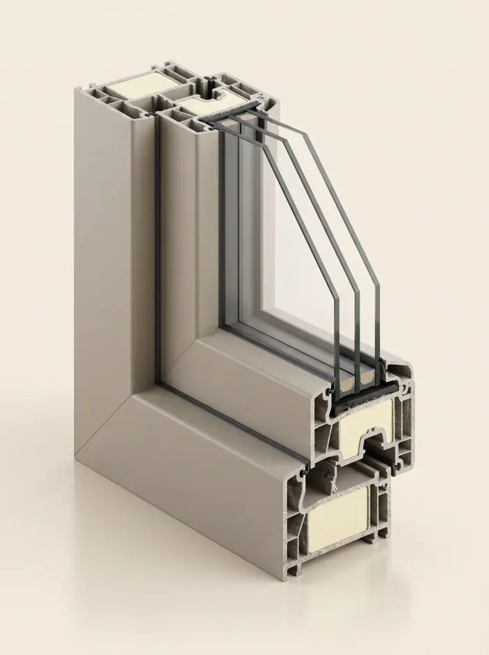

Termofibra. Il materiale che si muove come il vetro.
Fibra di vetro pultrusa: profili sottili, isolamento altissimo, stabilità nel tempo.
A chi costruisce o ristruttura con obiettivi energetici alti, a chi ha grandi vetrate esposte al sole, a chi vuole una finestra che resti stabile per decenni.
La fibra di vetro si dilata quasi quanto il vetro che contiene: telaio e vetrocamera lavorano insieme, e la sigillatura non si stressa a ogni escursione termica. Niente rinforzi metallici dentro il profilo.
È uno standard in Nord Europa e Nord America, e in Italia sta arrivando adesso, spinto dalle nuove soglie di prestazione energetica.

| Vetro | ≈ 9 · 10⁻⁶ /K |
| Termofibra | ≈ 8–10 · 10⁻⁶ /K |
| Alluminio | ≈ 23 · 10⁻⁶ /K |
| PVC | ≈ 70 · 10⁻⁶ /K |
Valori indicativi dalle schede tecniche. I dati certificati (DOP) sono nell’area architetti.
In showroom si tocca.
Aperto e chiuso, nelle finiture vere. Ti spieghiamo pregi e limiti senza fretta.
Domande frequenti
Termofibra o alluminio?
Quanto costa rispetto al PVC?
Dove installiamo
Da Vigano di Gaggiano a Milano Sud e Milano Ovest, con i nostri tecnici e i nostri posatori.